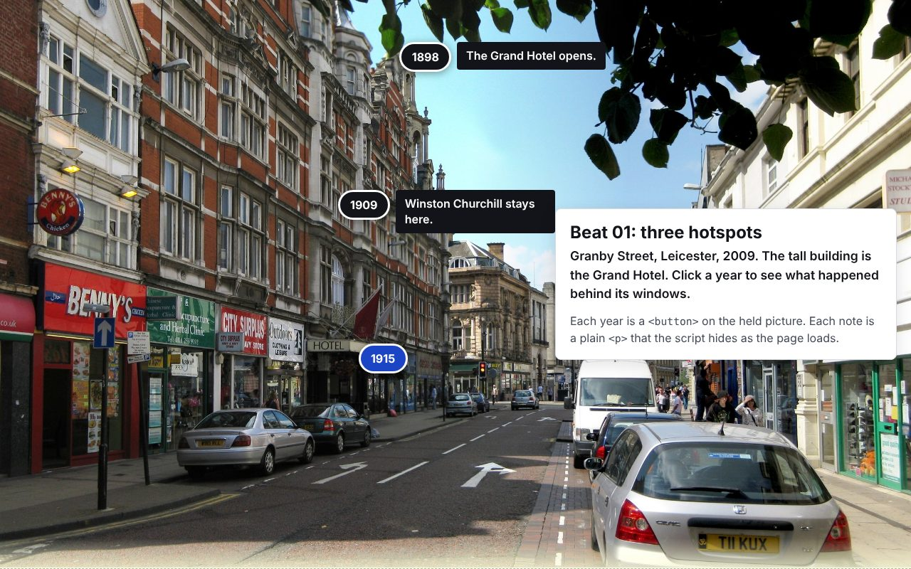
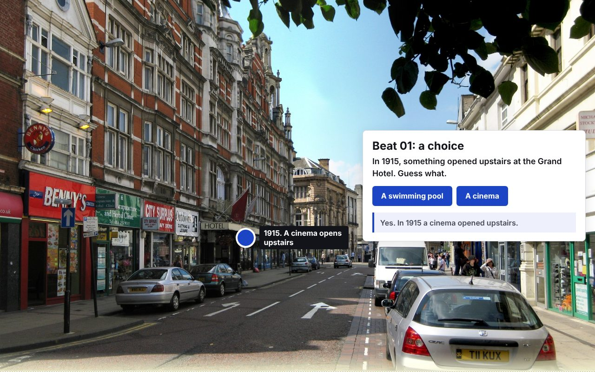

Last week your page started to move as the reader scrolled. Today we're going to look at the interaction and specifically how to get something to respond to a click. By the break, everyone should know how to set up a button in their page, in the beat where their reader clicks. First we'll get it to print a message to the console in the dev tools and then we'll look at how to make it do what your storyboard says, and I will come round.
You do not need lots of these. One click that your story needs, done well, is enough.
Today's code is ready to download
click-demos.zip
holds six demos, one for each kind of click in the brief, plus a
pop-up and a bar you drag. Each demo is a folder laid out like your
own project: index.html, css/style.css,
js/main.js and images. Unzip it, open the
folder in VS Code, and copy what you need into your own files.
- Hotspot: click a year on the hotel and its note appears.
- Toggle: a click plays an animation, and another plays it back.
- Choice: two buttons, two outcomes.
- Pop-up: a box that opens over the page, and a fold-out that needs no script.
- Slider: slide to compare 1903 and 2009.
- Drag the bar: grab the bar on the picture itself and drag it.
Session at a glance
Break
Also on this page: If you get stuck · Resources
Part one
A button that works
Every click on your page is the same three things: a button in your HTML, a listener in your script that waits for it, and the change it makes. Before the break, get the first two working. The change can come after.
1 The button
Find the beat on your storyboard where your reader clicks. Make sure your skeleton page has that beat, then put a button in it with the words your reader will click.
index.html, in the beat where your reader clicks
<div class="beat" id="beat-03-the-hotel">
<p>Click a year to see what happened here.</p>
<button type="button" id="button-1898">1898</button>
</div>
Use a real <button>, never a
<div> or a picture with a click on it. A button
works from the keyboard and with a screen reader without any extra
code.
2 The listener
js/main.js, at the bottom
const button1898 = document.querySelector("#button-1898");
button1898.addEventListener("click", function () {
console.log("1898 was clicked");
});
document.querySelector() finds something on your page,
written as you would in CSS: a # and its id.
addEventListener("click", …) waits for a click on it.
Everything between the curly brackets happens when the click comes.
Open the console (in Chrome: View, Developer, JavaScript Console) and
click your button. The message appears every time you click. Your
main.js has had a console.log in it since
Week 1; this one waits for a click.
Task 1 · 30 minutes · on your own project · everyone, before the break
A button that works
- On your storyboard, find the beat where your reader clicks. If there is more than one, start with one.
- In your skeleton page, check that beat is there, with its id.
-
Put a
<button>in it, with the words your reader will click. -
Add the listener at the bottom of
main.js, with aconsole.log. - Open the console and click. Then press Tab until the button is outlined and press Return: the message should appear again.
- Commit as first button and sync.
Stuck? Check If you get stuck, then put your hand up.
Break
Part two
Make it do something
When your button logs its message, swap the
console.log for the change your storyboard shows. The
simplest change shows something that was hidden.

Show something
Put the thing to show in your HTML, beside the button.
index.html
<button type="button" id="button-1898" aria-expanded="false">1898</button>
<p id="note-1898">The Grand Hotel opens.</p>js/main.js, replacing your listener
const button1898 = document.querySelector("#button-1898");
const note1898 = document.querySelector("#note-1898");
note1898.hidden = true; // the script hides it
button1898.addEventListener("click", function () {
note1898.hidden = !note1898.hidden; // ! means "not": shown becomes hidden, and back
button1898.setAttribute("aria-expanded", !note1898.hidden); // tells a screen reader it is open
});
Your script does the hiding, not your CSS. If the script never runs,
the reader still sees the note. It is the same rule as
gsap.from() last week.
A button on a held picture will not click
Your beats sit in front of the held picture, so they catch every click first. These two lines let clicks through the empty space in a beat. Anything inside the beat still catches its own.
/* In css/style.css, under YOUR STYLES.
CLICKS: let them through a beat to the held picture */
.beat { pointer-events: none; }
.beat > * { pointer-events: auto; }Play an animation on a click
When the change is movement, use last week's
gsap.from() and add one line: paused: true.
Instead of waiting for a scroll, it waits for a click.
js/main.js
const swap = gsap.from("#pic-1900s", {
opacity: 0,
duration: 1,
paused: true // hidden now; plays when it is told to
});
document.querySelector("#button-then").addEventListener("click", function () {
swap.play();
});
document.querySelector("#button-now").addEventListener("click", function () {
swap.reverse();
});
As last week, your CSS holds where things end up and
gsap.from() holds where they start. With no script, the
reader sees how it ends.
| In the listener | What it does |
|---|---|
swap.play() |
plays it forwards, once |
swap.reverse() |
plays it backwards, to the start |
swap.restart() |
plays it from the start on every click: a dice roll, a spray, a flash |
See it working: demo 2, toggle.
Two changes, one click
A timeline, as in Week 8's demo 4, takes
paused: true too. Each .from() starts when
the one before it finishes. Then call tl.play() in the
listener.
const tl = gsap.timeline({ paused: true });
tl.from("#pic-1900s", { opacity: 0, duration: 1 })
.from("#caption", { opacity: 0, y: 40 });Part three
Build your click
Start from your Figma frames: the beat as the reader arrives, and beside it the same beat after they click. If you have not drawn the second frame yet, draw it first.
chapter-3-inside
Then find your click in the table and open its demo. Each one is the same recipe with a different change. Copy from it, then change the ids and the pictures to yours.
| Your reader | Start from |
|---|---|
| clicks something in the picture, and a note appears | 1 Hotspot |
| clicks, and something moves, swaps or drops in | 2 Toggle |
| chooses, and each choice shows something different | 3 Choice |
| opens a box with more detail | 4 Pop-up |
| opens a word to see what it means | 4 Pop-up, the fold-out |
| slides a slider to compare, or to move something along | 5 Slider |
| grabs something on the picture and drags it | 6 Drag the bar |
If yours is not in the table, show me and we will find the closest.
A choice

The script hides both outcomes. Each button shows its own outcome and hides the other.
js/main.js
document.querySelector("#choose-pool").addEventListener("click", function () {
outcomePool.hidden = false; // show this one
outcomeCinema.hidden = true; // hide the other
marker.play(); // and play something in the picture
});
Put the outcomes inside <div aria-live="polite">
and a screen reader reads each one out as it appears.
A pop-up
A <dialog> opens over the page with
showModal() and shuts with close(). The
browser does the rest: Esc closes it, and the page behind cannot be
clicked while it is open.
index.html
<dialog id="postcard">
<img src="images/postcard.jpg" alt="…">
<p>Granby Street, about 1903.</p>
<button type="button" id="close-postcard">Close</button>
</dialog>With no script it never opens, so nothing your story needs should be only in a pop-up.
To explain a single word, use a <details>
instead. It folds open with no script at all.
<details>
<summary>Ramada</summary>
<p>A brand of hotels.</p>
</details>A slider
Demo 5 uses <input type="range">, a slider the
browser draws for you. It works with a mouse, a finger and the arrow
keys. It sends "input" rather than
"click" every time it moves, and
slider.value says where it is, from 0 to 100. To move
something along a line, set its position from it:
marker.style.left = slider.value + "%";
Demo 6 lets the reader grab the bar on the picture itself. It takes three listeners: press on the bar, move, let go. It keeps the slider too, because some readers cannot drag: anyone using the keyboard, and some people who cannot hold a mouse button down. If your reader drags something, give them a slider or buttons that do the same job.
Does it count?
The test for a genuine interaction: the reader's action changes what they see, and a different reader could do it differently. A button that only says “next” fails it: every reader gets the same thing, and nobody chose anything.
Task 2 · 60 minutes · on your own project
Build your click
- In Figma, draw the frame for after the click, if it is not there yet. Give it the beat's name with -after on the end, and save a named version.
- Open the demo that matches your Figma frames.
-
Copy what you need from its
index.htmlinto yours, and change the ids to yours. -
Copy its
js/main.jsinto the bottom of yours, and change the ids to match. -
Copy the styles you need from its
css/style.cssinto yours, under YOUR STYLES, then make them look like your design. - Click it with the mouse, then try it from the keyboard.
- Does a second click do what your Figma notes say?
- Commit as my click and sync.
I will come round. Show me your Figma frames first, then the page.
Part four
Before you go
- first button committed and synced: clicking it logs a message in the console.
- my click committed and synced too, if you got that far.
- Figma: the after frame beside your click's beat, and a named version.
- Any AI use today is in your AI-use log.
Before the next session: if your button only logs a message, make it do what your Figma frame shows, starting from the matching demo in the table.
If you get stuck
Nothing appears in the console when I click
Reload the page with the console open. Can you see
main.js is connected? If not, your script is not linked.
Red in the console? Cannot read properties of null means
querySelector found nothing: check that the id in your
script matches the id in your HTML, with a # in front.
My button on the held picture will not click
Add the two lines from A button on a held picture will not click to your CSS.
The note shows before I click
Is note.hidden = true; in your script? If your CSS
gives the note a display, that beats
hidden: add
[hidden] { display: none !important; } to your CSS.
It plays once, then never again
play() only plays forwards, once. Use
restart() to play it on every click, or a second button
with reverse().
The pop-up will not open
Is it showModal(), with a capital M? Does the id match
your <dialog>?
Something else
Ask in the class, or email a.m.pearson@leedsbeckett.ac.uk.
Resources
-
Click demos
Hotspot, toggle, choice, pop-up, slider and drag.
-
Introduction to events
What a listener is, starting with a button and a click.
-
Control and callbacks
play(),reverse(),restart()and the rest. -
The dialog element
showModal(),close(), and styling the backdrop. -
Making it move
gsap.from(), the held picture, and timelines.